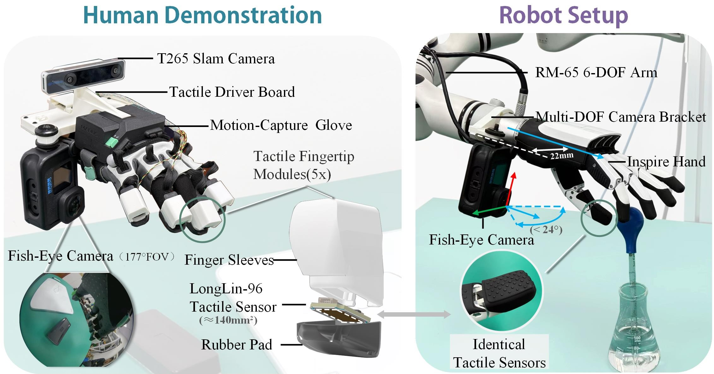
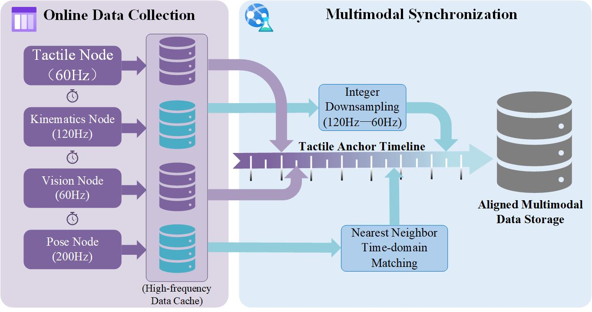
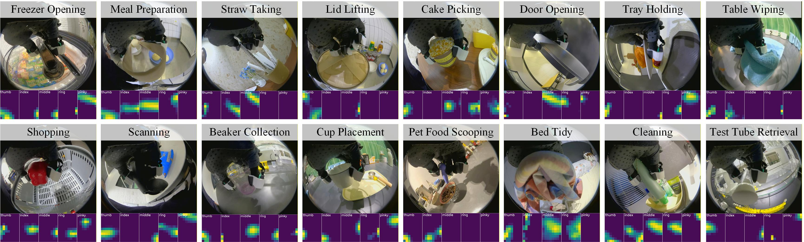
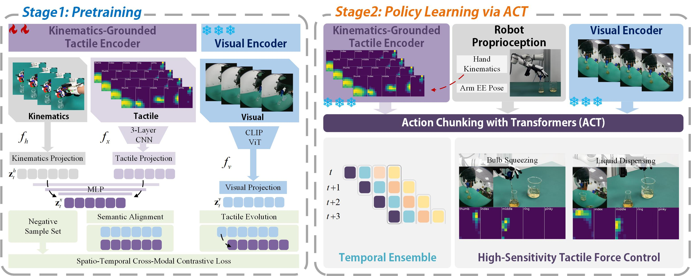
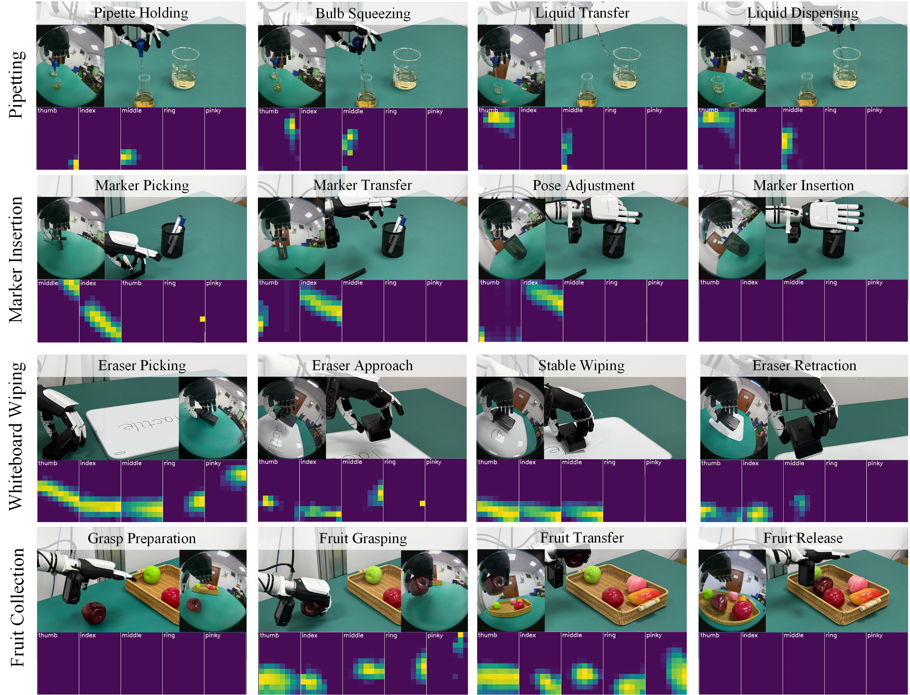

DexViTac
Collecting Human Visuo-Tactile-Kinematic Demonstrations for Contact-Rich Dexterous Manipulation
Abstract
Large-scale, high-quality multimodal demonstrations is essential for the robot learning of contact-rich dexterous manipulation. While human-centric data collection systems lower the barrier to scaling, they struggle to capture the tactile information during physical interactions. Motivated by this, we present DexViTac, a portable, human-centric data collection system tailored for contact-rich dexterous manipulation. The system enables the high-fidelity acquisition of first-person vision, high-density tactile sensing, end-effector poses, and hand kinematics within unstructured, in-the-wild environments. Building upon this hardware, we propose a kinematics-grounded tactile representation learning algorithm that effectively resolves semantic ambiguities within tactile signals. Leveraging the efficiency of DexViTac, we construct a multimodal dataset comprising over 2,400 visuo-tactile-kinematic demonstrations. Exprienments demonstrate that DexViTac achieves a collection efficiency exceeding 248 demonstrations per hour and remains robust against complex visual occlusions. Real-world deployment confirms that policies trained with the proposed dataset and learning strategy achieve an average success rate exceeding 85\% across four challenging tasks. This performance significantly outperforms baseline methods, thereby validating the substantial improvement the system provides for learning contact-rich dexterous manipulation.
System Design
The human demonstration interface features a decoupled design comprising a fisheye camera, motion-capture gloves, high-resolution tactile sensors, and a T265 tracking camera. The robot execution platform utilizes an isomorphic perception architecture wherein the tactile sensors remain strictly consistent with those on the human demonstration interface.

In the Wild Data Collection
The human demonstration interface features a decoupled design comprising a fisheye camera, motion-capture gloves, high-resolution tactile sensors, and a T265 tracking camera. The robot execution platform utilizes an isomorphic perception architecture wherein the tactile sensors remain strictly consistent with those on the human demonstration interface.
We scale up data collection in diverse environments...
Workflow of Data Collection
The human demonstration interface features a decoupled design comprising a fisheye camera, motion-capture gloves, high-resolution tactile sensors, and a T265 tracking camera. The robot execution platform utilizes an isomorphic perception architecture wherein the tactile sensors remain strictly consistent with those on the human demonstration interface.

Dataset Visualization
The dataset contains 2,400+ visuo-tactile-kinematic demonstrations across 40+ tasks in 10+ real-world environments.

Two-Stage Learning Strategy
Stage 1: A self-supervised framework aligns high-density tactile features with visual anchors utilizing a kinematics-Grounded encoder to learn spatially anchored representations. Stage 2: The pretrained encoders are subsequently integrated into an Action Chunking with Transformers (ACT) policy to map synchronized multimodal observations to multi-step action sequences for contact-rich dexterous manipulation.

Autonomous Policy Rollouts
Deployment experiments are conducted across four representative tasks to evaluate real-world performance: pipetting, whiteboard erasing, pen insertion, and fruit collection.
Pipetting
The dexterous hand precisely regulates pinch force to operate a flexible rubber bulb, testing the high-sensitivity force control performance of the system.
Whiteboard Erasing
This requires the end-effector to maintain constant contact pressure along dynamic trajectories, evaluating force compliance and stability during dynamic interactions.
Marker Insertion
Grasping and inserting small markers, involving stable grasping and in-hand manipulation capabilities.
Fruit Collection
Operating on heterogeneous objects with varying stiffness to verify adaptability to different physical properties.
The dataset contains 2,400$+$ visuo-tactile-kinematic demonstrations across 40$+$ tasks in 10$+$ real-world environments.
This dataset encompasses four task categories: High-Sensitivity Tactile Force Control, Contact-Rich Dynamic Following, Fine-Grained Precision Manipulation, and Configuration-Adaptive Interaction.



Data Collection Demonstrations
BibTeX
coming